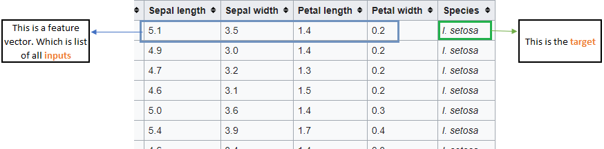
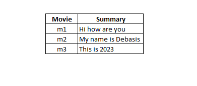
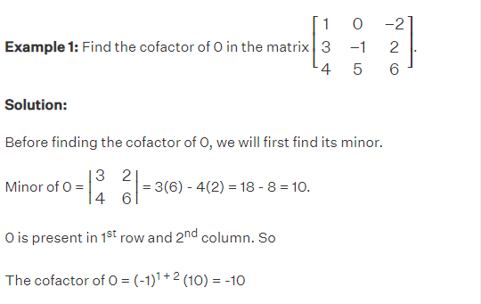
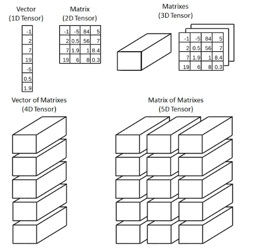

<!DOCTYPE html>
<html lang="en">

  <head>
  <meta charset="utf-8">
  <meta http-equiv="X-UA-Compatible" content="IE=edge">
  <title>Notes: Machine Learning/title>
  <meta name="viewport" content="width=device-width">
  <meta name="description" content="Detailed Machine Learning Notes">
  <link rel="canonical" href="/index.html">

  <!-- Custom CSS -->
  <link rel="stylesheet" href="../css/style2.css">

  <!-- Google fonts -->
  <!-- <link href='https://fonts.googleapis.com/css?family=Roboto:400,300' rel='stylesheet' type='text/css'>-->

  <!-- RSS feed -->
  
  <!-- Google ads -->
  <script async src="https://pagead2.googlesyndication.com/pagead/js/adsbygoogle.js?client=ca-pub-5905744527956213"
     crossorigin="anonymous"></script>
</head>


    <body>

      <script src="https://unpkg.com/vanilla-back-to-top@7.2.1/dist/vanilla-back-to-top.min.js"></script>
      <script>addBackToTop({
        backgroundColor: '#fff',
        innerHTML: 'Back to Top',
        textColor: '#333'
      })</script>
      <style>
        #back-to-top {
          border: 1px solid #ccc;
          border-radius: 0;
          font-family: sans-serif;
          font-size: 14px;
          width: 100px;
          text-align: center;
          line-height: 30px;
          height: 30px;
        }
      </style>   

    <header class="site-header">

  <a class="site-title" >Machine Learning</a>

  <a class="site-link" href="../index.html">Back to Home</a>
  <a class="site-link2" href="./ml.html">Back to Contents</a>

    
</header>     

    <div class="page-content">
      <div class="wrap">
      <div class="post">

  <header class="post-header">
    <h1>Machine Learning</h1>
  </header>

  <article class="post-content">
  <ul id="markdown-toc">
  <li><a href="#introduction-to-machine-learning" id="markdown-toc-introduction-to-machine-learning">Introduction to Machine Learning</a>
  <li><a href="#what-is-linear-algebra" id="markdown-toc-what-is-linear-algebra">What is linear Algebra?</a>
  <li><a href="#why-need-la-in-ML" id="markdown-toc-why-need-la-in-ML">Why we need to study Linear Algebra for Machine Learning?</a></li>
  <li><a href="#vectors" id="markdown-toc-vectors">Vectors</a></li>
  
  <ul>
          <li><a href="#how-we-use-vectors-in-ml" id="markdown-toc-how-we-use-vectors-in-ml">How vectors are used in Machine Learning</a></li>
          <li><a href="#row-column-vector" id="markdown-toc-row-column-vector">Row and column vector</a></li>
          <li><a href="#distance-from-origin" id="markdown-toc-distance-from-origin">Distance from origin</a></li>
          <li><a href="#eucledian-distance" id="markdown-toc-eucledian-distance">Eucledian Distance</a></li>
          <ul>
                <li><a href="#eucledian-distance-ml" id="markdown-toc-eucledian-distance-ml">How Eucledian distance is used in Machine Learning?</a></li>
          </ul>
          <li><a href="#scalar-addition" id="markdown-toc-calar-addition">Scalar Addition/Subtraction (Shifting)</a></li>
          <ul>
            <li><a href="#scalar-add-sub-ml" id="markdown-toc-scalar-add-sub-ml">Where scalar addition/subtraction is used in Machine Learning?</a></li>
          </ul>
          <li><a href="#vector-addition" id="markdown-toc-vector-addition">Vector Addition</a></li>
          <li><a href="#vector-multiplication-scalar" id="markdown-toc-vector-multiplication-scalar">Vector multiplication by a scalar (number)</a></li>
          <li><a href="#dot-product" id="markdown-toc-dot-product">Dot Product (Multiplication between 2 vectors)</a></li>
          <ul>
            <li><a href="#dot-product-1" id="markdown-toc-dot-product-1">Dot Product</a></li>
            <li><a href="#rules-dot-product" id="markdown-toc-rules-dot-product">Rules of Dot Product</a></li>
            <li><a href="#useful-dot-product" id="markdown-toc-useful-dot-product">How is Dot Product useful?</a></li>
            <li><a href="#useful-dot-product-ml" id="markdown-toc-useful-dot-product-ml">Usefulness of Dot product in ML</a></li>
            <li><a href="#geometric-dot-product-ml" id="markdown-toc-geometric-dot-product-ml">Geometric intution of Dot product</a></li>
          </ul>
          <li><a href="#hyperplane" id="markdown-toc-hyperplane">Hyperplane</a></li>
          <ul>
            <li><a href="#hyper-plane-need" id="markdown-toc-hyper-plane-need">Why we need hyperplane?</a></li>
            <li><a href="#equation-of-hyperplane" id="markdown-toc-equation-of-hyperplane">Equation of Hyperplane</a></li>
          </ul>
          
      </ul>
   <li><a href="#matrices" id="markdown-toc-matrices">Matrices</a></li>
   <ul>
    <li><a href="#type-of-matices" id="markdown-toc-type-of-matices">Type of Matrices</a></li>
    <li><a href="#matrix-equality" id="markdown-toc-matrix-equality">Matrix Equality</a></li>
    <li><a href="#scalar-operation" id="markdown-toc-scalar-operation">Scalar Operation</a></li>
    <li><a href="#matrix-addition-subtraction" id="markdown-toc-matrix-addition-subtraction">Matrix Addition and Subtraction</a></li>
    <li><a href="#matrix-multiplication" id="markdown-toc-matrix-multiplication">Matrix Multiplication</a></li>
    <li><a href="#transpose-matrix" id="markdown-toc-transpose-matrix">Transpose of a Matrix</a></li>
  
  </ul>

  <li><a href="#determinants" id="markdown-toc-determinants">Determinants</a></li>
   <ul>
    <li><a href="#minor" id="markdown-toc-minor">Minor</a></li>
    <li><a href="#co-factor" id="markdown-toc-co-factor">Cofactor</a></li>
    <li><a href="#adjoint" id="markdown-toc-adjoint">Adjoint</a></li>
    <li><a href="#inverse-of-matrix" id="markdown-toc-inverse-of-matrix">Inverse of Matrix</a></li>
    <li><a href="#solving-linear-equations" id="markdown-toc-solving-linear-equations">Solving a system of linear equations</a></li>
    
  </ul>
   <li><a href="#tensors" id="markdown-toc-tensors">Tensors</a></li>
   <li><a href="#tldr" id="markdown-toc-tldr">TL;DR</a></li>
 </ul>


<h3 id="introduction-to-machine-learning">Introduction to Machine Learning</h3>
<ul>
  <li>It's important to understand the geometric intution behing the concepts rather than only understanding how to do the computation</li>
  <li>For example, we might come to know how to do a matrix multiplication but not understanding why and where we will need this logic will make its usage in applications difficult</li>
  <li>So, with every topic that we will discuss, will also try to understand its intution and the usage in Machine Learning</li>
</ul>
<ul>
   </li>
  
</ul>

<h3 id="what-is-linear-algebra">What is Linear Algebra?</h3>
<ul>
  <li>A very basic defination can be that it is a study of systems of linear equations</li>
  <li>A system of linear equations (or linear system) is a collection of one or more linear equations involving the same variables.</li>
    <ul>
     </li>
    </ul>
    <li>Important concepts in Linear Algebra:</li>    
    <ul>
        <li><i>Scalars</i> - numbers like 2,5,6</li>
        <li><i>Vectors</i> - collection of numbers in one dimension [3,4]</li>
        <li><i>Matrix</i> - collection of numbers in two dimension</li>
        <li><i>Tensors</i> - collection of numbers in higher dimensions</li>
      </ul>
      <ul>
        </li>
    </ul>
</ul>

<h3 id="why-need-la-in-ML">Why we need to study Linear Algebra for Machine Learning?</h3>
<ul>
  <li>It is very good in generalizing concepts in higher dimensions.</li>
  <ul>
    <li>We humans are not good in higher dimension. The max we can visualize is in 3-dimension (like seeing world in 3D)</li>
    <li>With Linear Algebra we can easily go to any higher dimension and solve them. </li>
  </ul>
  <li>Data Representation</li>
  <ul>
    <li>In ML & Deep learning we get input data in many formats - tabular, text,image,video,audio</li>
    <li>With Linear Algebra we can represent all these data very easily using Linear Algebra </li>
    <li>So, linear algebra helps in representing the data and use them as input for our algorithms</li>
  </ul>
</ul>
<h3 id="vectors">Vectors</h3>
<ul>
  <li>The root of all building block in Linear Algebra is vector</li>
  <li>There are different versions of it Physics, Mathematics & Computer Science. But lets define one for our purpose:</li>
  <ul>
    <li>Think of it is an arrow.</li>
    <ul>
        </li>
    </ul>
    <li>Then think of that arrow sitting inside a codinate system (x-y plane) with its tail sitting at the origin </li>
    <ul>
        </li>
    </ul>
    <li>In Linear Algebra the vector is almost always rooted at the origin except in few cases</li>
    <li>Now once we understand the concept of arrow in space, we translate them over to the list of numbers which are cordinates of vectors</li>
    <li>This list of number (co-ordinate) gives instruction on how to reach the tip of the vector from the tail of it(origin)</li>
    <ul>
        <li>Like the below 2-D example says the co-orinate to be (2,4) i.e walk 2 units from x-axis and then walk 4 units parallele to y-axis</li>
        </li>
    </ul>
    <li>Every vector is associated with only one pair of number and every pair of number gives one unique vector (in 2D space)</li>
    <li>Now this can be extended to 3-dimension by adding another axis(z-axis which is perpendicular to x and y axis) and adding another number for that z-axis</li>
    <ul>
        <li>The three numbers (x,y,z) - the 'x' number will tell how far to move along x-axis, 'y' number will tell how far to walk parallel y-axis and the 'z' number will tell how far to move parallel to the z-axis</li>
        <li>Every triplet of number gives one vector in space and every vector in space gives exactly one triplet of numbers (in 3D space)</li>
        <li>Below is a n example of multiple 3-D vectors in space</li>
        <ul>
            </li>
        </ul>
    </ul>
    <li>Now as we moved from 2-dimension to 3-dimension , we can extend it to any number of dimensions. For example a 4-dimension vector will have a co-orinate as (3,6,7,5) </li>
    <li>So, 2-D vector system it is a vector of dimenion 2, in n-D vector system it is a vector of dimension n </li>
    <li>In machine learning a vector is represented as [x1, x2, x3,.....,xn] for a n-dimension vector </li>

</ul>
<h4 id="how-we-use-vectors-in-ml">How vectors are used in Machine Learning</h4>
<ul>
  <li>Suppose we have a dataset. Let's take <a href="https://en.wikipedia.org/wiki/Iris_flower_data_set" target="_blank">iris dataset</a> which has 150 flower data with 5 columns (Sepal length, Sepal Width, Petal Length, Petal Width, Species)</li>
   </li>
   <li>Here the list of inputs (Sepal length, Sepal Width, Petal Length, Petal Width) will be a feature vector</li>
   <li>And the Species value will be the target</li>
   <li>So, if we give an input feature vector [5.2,4.3,5.6,7.8] to a machine learning model , it will give output as a target (Setosa)</li>
   </li>
   <li>Every input to a machine learning model has to be a vector</li>
   <li>When the input column is a categorical column then they are encoded as numbers. For example a column 'Gender' with values as male and female will be converted to values as 0
    '0' and '1' before giving it as an input to a machine learning algorithm.
   </li>
   <li>Another example regarding vector in ML is while designing a Movie Recomemdation sysyem:</li>
   <ul>
    <li>If the movie data input is as below textual form:</li>
    <ul>
        </li>
    </ul>
    <li>Now, to give this as an input to ML models we convert this into a feature vector form using <b>Bag of Words</b> technique</li>
    <li>This is a 10 deminsional space(as there are 10 columns) where each row can be represented as a vector.</li>
    <ul>
        </li>
    </ul>
    <li>Now for better understanding of the usage if suppose there were only 3 dimension (3 columns of data) and a new movie was given as input and recommendation was asked. </li>
    <li>Then we find the distance of this new movie vector to other 3 already present movie vectors and the one with least distance will be recommended</li>
    <ul>
        </li>
    </ul>
   
</ul>

</ul>
<h4 id="row-column-vector">Row and column vector</h4>
<ul>
  <li>It is a way to represent a vector</li>
  <ul>
    <li>If the vector is represented as a row, then it is a row vector. For example a feature vector that we discussed above</li>
    <ul>
        </li>
    </ul>
    <li>If the vector is represented as a column, then it is a column vector</li>
    <ul>
        </li>
    </ul>
  </ul>
  <li>In a dataset we can visualise it as below:</li>
  </li>
</ul>

<h4 id="distance-from-origin">Distance from Origin</h4>
<ul>
  <li>We use pythagoras theorem to find the distance between the origin and a point in 2-D as it forms the hypotenuse</li>
  <ul>
    <li>If the point is (x,y) then the distance from the origin to this point is squrae_root(x square + y square)</li>
    </li>
  </ul>  
  <li>This distance is also konown as the magnitude of the point denoted as ||A||</li>
  <li>The 2-D distance forula can be extended to any dimension as square root (sum of squares of the points)</li>
  <ul>
    <li>Python code to calculate distance is shown below</li>
    </li>
</ul> 
</ul>

<h4 id="eucledian-distance">Eucledian Distance</h4>
<ul>
  <li>Eucledian distance formula is used to find out distance between two points</li>
  <li>In 2D Eucledian distance formula for distance between two points is  </li>
  </li>
  <li>We can extend this formula to any dimension. Suppose if its 3D then formula for points (x0,y0,z0) & (x1,y1,z1) would be</li>
  </li>
  <h4 id="eucledian-distance-ml">How Eucledian distance is used in Machine Learning?</h3>
  <ul>
        <li>In K-nearest Neighbour algorithm which is a classification algorithm, it uses eucledian distance to classify items</li>
        <li>In below example, we consider every flower to be a vector and calculate the distance of unknown species from the other two vectors</li>
        <li>Since the eucledian distance of the new one is closer to setosa, we clasify this as setosa as well</li>
        </li>
        <li>Hope we now understand how knowing eucledian distance can help us in Machine learning</li>
  </ul>
</ul>

<h4 id="scalar-addition">Scalar Addition/Subtraction (Shifting)</h4>
<ul>
  <li>When we add a scalar to a vector, it just gets added with each point</li>
  <li>For example if we add a scalar 2 with a point (3,4). Then it becomes (5,6)</li>
  <li>Just imagine as if taking 2 units walk further in x and y co-ordinate from (3,4) and we reach (5,6)</li>
  <li>It is like <b>shifting</b> the vector</li>
  </li>
  <li>Scalar subtartction will also work in similar way , where we walk backward (-2) instead of forward</li>
  </li>
  <li>This logic applies to any n dimension</li>
 
  <h4 id="scalar-add-sub-ml">Where scalar addition/subtraction is used in Machine Learning?</h3>
    <ul>
          <li>It is used for <b>mean centering</b></li>
          <li>It is a useful pre-processing techique in various ML algorithms which helps to improve performance, convergence and interpretability of models</li>
          <li>If there are 50 random vectors -> (x1, y1), (x2, y2), ...., (xn, yn)</li>
          <li>If there are drawn in 2-D space the points will look something like this</li>
          </li>
          <li>Next if we take mean of x components and subtract each x-component by this x-mean and similarly take mean of y-componenst and subtract y-component by this y-mean, then the data will get mean centered.</li>
          <li>It will look something like this</li>
          </li>
          <li>This method is used in many Machine learning concepts which we will dive in later studies:</li>
          <ul>
            <li>Principal Component Analysis</li>
            <li>Linear Regression</li>
            <li>Gradient based optimization algorithms</li>
            <li>Clustering algorithms</li>
            <li>Regularizations</li>
        </ul> 
    </ul>
</ul>

<h4 id="vector-addition">Vector Addition</h4>
<ul>
  <li>Suppose we have two vectors v (2,3) & w (2,-2)</li>
  </li>
  <li>To add this two move the second one such that its tail sits at the tip of first one</li>
  </li>
  <li>Now if we draw a vector from tail of first one to tip of second one shifted position. That new vector will be their sum v+ w (4,1)</li>
  </li>
  <li>A way to understand this is, if we take a step towards the direction & distance of first vector (v) and then take a step in direction and distance of second vector (w), the overall effect is same as if we have moved along the sum of the two vectors. </li>
  <li>So, if we have to add (2,3) & (2,-2) then add the x co-ordinates (2+2 = 4) and y co-ordinates (3-2 = 1). The new vector point is (4,-1) </li>
</ul>
<li><a href="#vector-multiplication-scalar" id="markdown-toc-vector-multiplication-scalar">Vector multiplication by a number</a></li>


<h4 id="vector-multiplication-scalar">Vector multiplication by a scalar (number)</h4>
<ul>
  <li>If we take a vector (2,3)</li>
  </li>
  <li>and multiply it by 2, then we stretch it out two times than what we have started (4,6)</li>
  </li>
  <li>Similarly, if we multiply by 1/2 then the vectoe becomes half the size of the original</li>
  <li>This process of strectching, squishing the vector s called <b>scaling</b></li>
</ul>

<h4 id="dot-product">Dot Product (Multiplication between 2 vectors)</h4>
<ul>
  <li>If there are two vectors v & u there are two types of product that we can do:</li>
  <ul>
    <li><b>Dot Product</b> : Also known as Scalar product as the result is a scalar</li>
    <li><b>Cross Product</b> : Also known as vector product as the result is a vector</li>
  </ul>
  <h4 id="dot-product-1">Dot Product</h4>
  <ul>
    <li>Its a component wise multiplication</li>
    <li>if <b>v = [a1,a2,a3]</b> and <b>u = [b1,b2,b3]</b> then <b>u.v = [a1.b1 + a2.b2 + a3.b3]</b></li>
    <li>We can also treat it as a matrix multiplication</li>
    </li>
    </li>
  </ul>
  <h4 id="rules-dot-product">Rules of Dot Product</h4>
  <ul>
    <li>This will help us to understand linear transformations</li>
    </li>
  </ul>
  <h4 id="useful-dot-product">How is Dot Product useful?</h4>
  <ul>
    <li>Use to compute similarity between two vectors</li>
    <li>Calculate projections</li>
    <li>Perform matrix multiplication</li>
  </ul> 
  <h4 id="useful-dot-product-ml">Usefulness of Dot product in ML</h4>
  <ul>
    <li>To calculate similarity for recommendations (cosine similarity)</li>
    <li>Matrix computation in matrix multiplication</li>
  </ul> 
  <h4 id="markdown-toc-geometric-dot-product-ml">Geometric intution of Dot product</h4>
  </li>
  <ul>
    <li>Angle between two vectors</li>
    <ul>
       <li>If 'A' & 'B' are non zero vectors then,</li>
       <li>A.B = 0, Then than means the angle is 90 degree so they are perpendicular to each other</li>
       <li>This means they are dissimilar and dont share any properties</li>
    </ul> 
    <li>Cosine Similarity</li>
    <ul>
       </li>
       <li>This is used as a similarity measure in cosine similarity</li>
       <li>We find out theta which will give us value from -1 to 1</li>
       <li>If value (cos theta) is 1 then theta is zero, then they are similar vectors (same direction)</li>
       <li>If value (cos theta) is 0 then theta is 90 degree, then they are orthogonal then they share no common properties(dis-similar)</li>
       <li>If value (cos theta) is -1 then theta is 180 degree, then they are opposite vectors (opposite direction)</li>       
       </li>
       <li>This can be used to find similarity between vectors for example movie recommendation system</li>
    </ul> 
  </ul> 
</ul>

<h4 id="hyperplane">Hyperplane</h4>
<ul>
  <li>In 2-D we get a line similarly in 3D we get a plane</li>
  <li>Line example</li>
  </li>
  <li>Plane example</li>
  </li>
  <li>So, in 4-D, 5-D etc what is the eqivalent of a line or plane? It is <b>HYPER PLANE</b></li>
  <h4 id="hyper-plane-need">Why we need hyperplane?</h4>
  <ul>
    <li>This is needed because in real life examples in Machine Learning we deal with dimension greate than 3D</li>
    <li>For example iris dataset is a 5D data as it has 5 input columns, in MNIST dataset the dimension is 785</li>
    <li>So, when we are using algorithms such as Logistic regression, SVM we need equtaions ore than 3D and that is a hyper plane</li>
  </ul> 
  <h4 id="equation-of-hyperplane">Equation of Hyperplane</h4>
  <ul>
    <li>Equation of a line is <i>y = mx + b</i></li>
    </li>
    <li>A equation of hyper plane can be derived from this to be</i></li>
    <li><b>w1x1 + w2x2 + w3x3 + .... + wnxn + w0 = 0</b></li>
    </li>
    </ul> 
</ul>
</ul>

<h3 id="matrices">Matrices</h3>
<ul>
  <li>A matrix is a rectangular array of numbers, symbols or expressions arranged in rows and columns. The number, symbols or expressions are called the elements of matrix</li><ul>
    </li> 
    <li>They are used in:</li> 
    <ul>
      <li>Linear Systems</i></li>
      <li>Linear Transformations</i></li>
      <li>Eigen values & Eigen vectors</i></li>
      <li>Markov Chains</i></li>
      <li>Computer Graphics</i></li>
      <li>Control theory</i></li>
      <li>Optimizations</i></li>
    </ul> 
    </ul>
    <h4 id="type-of-matices">Type of Matrices</h4>
    <ul>
      <li><b>Row Matrix</b> also known as row vector. It is a matrix with only one row</li>
      <li><b>Column Matrix</b> is a matrix with only one column</li>
      <li><b>Zero Matrix</b> or a null matrix is a matrix that has all its elements zero</li>     
      <li><b>Square Matrix</b> where number of rows is equal to number of columns</li>
      <li><b>Diagonal Matrix</b> is a square matrix that has all its elements zero except for those in the diagonal from top left to bottom right; which is known as the leading diagonal of the matrix</li>
      <li><b>Scalar Matrix</b> is a diagonal matrix where all the diagonal elements are equal</li>
      <li><b>Identity Matrix</b> also known as unit matrix is a diagonal matrix whose elements in the diagonal are all ones</li>
      <li><b>upper triangular matrix</b> is a square matrix where all the elements located below the diagonal are zeros</li></li>   
      <li><b>lower triangular matrix</b> is a square matrix where all the elements located above the diagonal are zeros</li></li>   
      </li>
    </ul> 

    <h4 id="matrix-equality">Matrix Equality</h4>
    <li>Two matix are equal when:</li>
    <ul>
      <li>Order is same for both</li>
      <li><b>Column Matrix</b> is a matrix with only one column</li>
      <li>Aij = Bij</li>   
      <li>i.e, all items should match</li>
      </li>
    </ul> 

    <h4 id="scalar-operation">Scalar Operation</h4>
    <ul>
    <li>Scalar Addition : We add a scalr number to all elements of a matrix</li>
    <li>Scalar Multiplication : We multiply a scalr number to all elements of a matrix</li>
    </li>
    <li>Rule : k(A + B) = KA + KB ; where K is a scalar and A B are two matrices</li>
    </ul>

    <h4 id="matrix-addition-subtraction">Matrix Addition and Subtraction</h4>
    <ul>
    <li><b>Important Rule</b> For matrix operations the order of both the matrix should be same.</li>
    <li><b>Matrix Addition</b>. This is done element by element</li>
    <ul>
      </li>
    </ul>
    <li><b>Matrix Subtraction</b> is also done element by element</li>
    <ul>
      </li>
    </ul>
    <li>Some important <b>Rules</b></li>
    <ul>
      </li>
    </ul>
    </ul>

    <h4 id="matrix-multiplication">Matrix Multiplication</h4>
    <ul>
    <li>The concept that we use here is dot product</li>
    <li><b>Rule</b> for multiplication: The number of columns of first matrix must be equal to number of rows of second matrix</li>
    <li>The result matrix order will be the 'number of rows of first column' X 'number of columns of second matrix'</li>
    </li>
    <li>To get the resultant matrix below is formula of dot product for 2 X 2 matrix</li>
    </li>
    <li>Some important <b>Rules</b> for matrix multiplication</li>
    <ul>
      </li>
    </ul>
    </ul>

    <h4 id="transpose-matrix">Transpose of a Matrix</h4>
    <ul>
    <li>It's a matrix transformation where all rows becomes column and all columns become rows</li>
    </li>
    <li><b>Symmetric matrix</b> is a matrix which do not change after transpose</li>
    <li>A = A Transpose</li>
    <ul>
      </li>
    </ul>
    <li> <b>Skew Symmetric matrix</b> is a matrix which do not change after transpose</li>
    <ul>
      </li>
    </ul>
    <li>Some important <b>Rules</b> for matrix transpose</li>
    <ul>
      </li>
    </ul>
    </ul>

</ul>

<h3 id="determinants">Determinants</h3>
<ul>
  <li>Divison operation cannot be done on matrices, only multiplication can be done.</li>
  <li>So, we find inverse and multiply it for the same divison operation.</li>
  <li>Instead of 'A/B' we do 'A * (Inverse of B)'</li>
  <li>Only square matrix are invertible</li>
  <li>The formula for finding an inverse is </li>
  <ul>
    </li>
    <li>|A| is determinant of A, Adj A is adjoint of A </li>
  </ul>
  <li>A <b>determinant</b> is a scalar value computed from a square matrix that carries important information about the matrix</li>
  <li>It has several uses in linear algebra, including determining the inveriability of a matrix. finding the solution to systems of linear equations and calculating the volume scaling factor</li>

  <ul>
    <li>How to find determinant?</li>
    <ul>
      <li>Determinant for a 2 X 2 matrix:</li>
      </li>     
      <li>Determinant for a 3 X 3 matrix:</li>
      </li>    
    </ul>
  </ul>
  <li>How to decide if inverse of a matrix is possible:</li><br>
    <ul>
      <li>It should be a square matrix</li>
      <li>Determinant of the matrix should not be zero</li>
      <li>Any matrix whose determinant is zero is called a <b>Singular Matrix</b></li>
      <li>So, we can only find inverse of a singular matrix</li>
    </ul>

    <h4 id="minor">Minor</h4>
    <ul>
    <li>Minor of an element aij of a Determinant is the determinant obtained by deleting it's ith row and jth column. It is dented by Mij</li>
    <li>Below is the formula</li>
    </li>
    </ul>

    <h4 id="co-factor">Co-factor</h4>
    <ul>
    </li>
    <li>Below is an example for one element</li>
    </li>
    </ul>

    <h4 id="adjoint">Adjoint</h4>
    <ul>
      <li>The classical adjoint of a matrix is a matrix formed by replacing each element in the original matrix with it's correspoing co-factor and then taking transpose of the resultant matrix.It is denoted as adj(A)</li>
      </li>
    </ul>

    <h4 id="inverse-of-matrix">Inverse of a matrix</h4>
    <ul>
      <li>Inverse formula is</li>
      </li>
      <li>An inverse matrix is a matrix that, when multiplied by the original matrix, results in the identity
        matrix</li>
      <li>The inverse matrix is defined only for square matrices (matrices with the same number
        of rows and columns) and not all square matrices have an inverse.</li>
      <li>A matrix is invertible (has an inverse) if and only if it is non-singular, meaning its determinant is
        non-zero. If the determinant of A is zero, A is called a singular matrix, and it does not have an
        inverse.</li>
      <li>Inverse matrices play a crucial role in linear algebra and have many applications, such as
        solving systems of linear equations, finding the solution to a matrix equation, and performing
        various matrix operations. There are several methods for finding the inverse of a matrix,
        including Gaussian elimination, the adjugate method, and LU decomposition.</li>
    </ul>

    <h4 id="solving-linear-equations">Solving a system of linear equations</h4>
    <ul>
      <li>Any linear equation can be changed into matrix representation and calculated for the unknown</li>
      </li>
      </li>
    </ul>
    
</ul>

<h3 id="tensors">Tensors</h3>
<li>Tensor is type of Data Structure</li>
<li>Why we need tensors?</li>
<ul>
  <li>All machine learning libraries use tensors as data structure</li>
</ul>
<li>What are tensors?</li>
<ul>
  <li>Tensors is a data structure. Think of it as a container for numbers</li>
  <li>0D Tensors/Scalar</li>
    <ul>
      <li>The number of dimension is zero - 2,3</li>
      <li>Dimension is also known as rank or number of axis</li>
      
    </ul>
    <li>1D Tensors/Vector</li>
    <ul>
      <li>The number of dimension is one - [1,2,3,4]</li>
      <li>It is also known as vector, 1D array</li>
      </li>
    </ul>
    <li>2D Tensors/Matrix</li>
    <ul>
      <li>The number of dimension is two</li>
      <li>It is a collection of vectors</li>
      </li>
    </ul>
    <li>ND Tensors</li>
    <ul>
      <li>vector is a collection of scalar, Matrix is a collection of vectors, 3D Tensor is a collection of matrices</li>
      <li>This idea can be built upon to build higher dimension tensors</li>
      <li>Example of a 3D tensor below</li>
      </li>
      <li>Example of a 4D tensor - Images</li>
      <li>Example of a 5D tensor - Videos</li>
    </ul><br>
    <li>Below are representation of different kind of tensors</li>
    </li>
    <li>Rank, Axes and Shapes</li>
    <ul>
      <li><b>Rank</b> is the number of dimension or the number of axis. All are same</li>
      <li><b>Shape</b> is number of elements in an axis</li>
      </li>
    </ul>
</ul>
    
  </ul>


<h3 id="tldr">TL;DR</h3>
<ul>
  <li>Lets quickly go over the key takeaways from this section:</li><ul>
    <li>Yet to update...</li>
    
  </ul>
</ul>

  </article>

</div>

      </div>
    </div>

    <footer class="site-footer">
   <div align="center" class="wrap">
      <div align="center" class="footer-col-1 column">
         <ul>
            <li>
               
               <span class="icon github">
                  <a href="https://github.com/Debasis5" target="_blank" rel="noreferrer noopener">
                     <svg version="1.1" class="github-icon-svg" xmlns="http://www.w3.org/2000/svg" xmlns:xlink="http://www.w3.org/1999/xlink" x="0px" y="0px"
                        viewBox="0 0 16 16" enable-background="new 0 0 16 16" xml:space="preserve">
                        <path fill-rule="evenodd" clip-rule="evenodd" fill="#C2C2C2" d="M7.999,0.431c-4.285,0-7.76,3.474-7.76,7.761
                           c0,3.428,2.223,6.337,5.307,7.363c0.388,0.071,0.53-0.168,0.53-0.374c0-0.184-0.007-0.672-0.01-1.32
                           c-2.159,0.469-2.614-1.04-2.614-1.04c-0.353-0.896-0.862-1.135-0.862-1.135c-0.705-0.481,0.053-0.472,0.053-0.472
                           c0.779,0.055,1.189,0.8,1.189,0.8c0.692,1.186,1.816,0.843,2.258,0.645c0.071-0.502,0.271-0.843,0.493-1.037
                           C4.86,11.425,3.049,10.76,3.049,7.786c0-0.847,0.302-1.54,0.799-2.082C3.768,5.507,3.501,4.718,3.924,3.65
                           c0,0,0.652-0.209,2.134,0.796C6.677,4.273,7.34,4.187,8,4.184c0.659,0.003,1.323,0.089,1.943,0.261
                           c1.482-1.004,2.132-0.796,2.132-0.796c0.423,1.068,0.157,1.857,0.077,2.054c0.497,0.542,0.798,1.235,0.798,2.082
                           c0,2.981-1.814,3.637-3.543,3.829c0.279,0.24,0.527,0.713,0.527,1.437c0,1.037-0.01,1.874-0.01,2.129
                           c0,0.208,0.14,0.449,0.534,0.373c3.081-1.028,5.302-3.935,5.302-7.362C15.76,3.906,12.285,0.431,7.999,0.431z"/>
                     </svg>
                  </a>
               </span>

               <a href="mailto:debasispatra.sbd@gmail.com">
                  <svg version="1.1" class="mail-icon-svg" xmlns="http://www.w3.org/2000/svg" xmlns:xlink="http://www.w3.org/1999/xlink" x="0px" y="0px"
                     viewBox="0 0 16 16" enable-background="new 0 0 16 16" xml:space="preserve">
                     <image id="image0" width="16" height="16" x="0" y="0" xlink:href="data:image/png;base64,iVBORw0KGgoAAAANSUhEUgAAAW4AAAFuBAMAAABTjO+8AAAABGdBTUEAALGPC/xhBQAAACBjSFJN
                        AAB6JgAAgIQAAPoAAACA6AAAdTAAAOpgAAA6mAAAF3CculE8AAAALVBMVEWxsLDGxcW4t7esq6u+
                        vr7Z2NiqqamxsLCvrq7Ozc2ysrK1tbWenZ2dnZ3////zevNgAAAAAXRSTlMAQObYZgAAAAFiS0dE
                        Dm+9ME8AAAAJcEhZcwAACxMAAAsTAQCanBgAAAAHdElNRQfkBwQDLRvUSpUpAAALt0lEQVR42u2d
                        PW8jyRGGR7Lk3XXEyNqQwAVKBewtiHMkwAfQoQ4L3B02ImCs98KVuFZzFfECm3Am4A7YDXmR/sQF
                        /gHO7+94R6Somarq7qr+mGra/YZifzzsfmc4XdNdappcOvjixZcX2VrPpj+az1r8QxtDqp/MRmfa
                        IDI93WKbxUgbRaS3D9zmUhtFolfmUUttGL6OOtjm+kIbh61Jl3t/nPLK9LXUBuLpAGDvi1NWkHs/
                        nPKtwVprQ/l1QGDvg1NWFLf5URvLp28NrbUCy+sfzJB6MUqD/SoeRagkk/M0nkOqFA+Rx2+H5zY3
                        8dzfK2CncIrGcBtztYfuvtdtJPdHJe7ZXtrEmPdx2MdK2OZ6P+1tzEUU9+/VuMdR3E/UuM/+L7lP
                        9pR7um3lry+G0iQp93lUKxL9rnJX7spduSt35a7clbtyV+7KXbkrd+Wu3JW7clfuyl25K3flrtyV
                        u3JX7spduSt35a7c+809Men0rnJX7spduSt35a7clVuiOzXuZQz2QyMK3POLcOzjHd/w3DEnBaa7
                        xgH3z1+nE2h6xx3u8McmFNYN4U55dIkOd6hTpkaZO8wp3QaUuEOO93ZdosUdchC86xI1bvmvT7+6
                        GrfUKX2X6HFLndJ3iSK3zCnoWJoet8Qp+EyxHrfEKSemIG6+U4jDi5rcXKdQJ881ublOwS5R5uad
                        SiePuOpyc5xC5yfQ5eakIaFcos7td4rlILQ2t88ptiwW2tw+p9AuKYDb7RTrcXl9bpdT7LlO9Lld
                        TrG5pAhuu1McSRVK4LY5xZURpwRu8y+6ht0lhXDTOSOcqTfK4KaSi7jzJpXBTTnF5RLE/eeEiRXO
                        BNzYKX8wEu6JSad3NPeC5RSLS+ZTNe6XNBFwynPLMOtxnx3SxXtOsbjkjer7tE9k8a5TLC5ZKL8H
                        pHvpOMWSg22kzH1EV9g55XhFfv6m0X7vSieP3CXL+97+sS63JVnn2jXcm9yFytxkctSHAadza82a
                        ArgtTtnQ3FEfbRMAanPTcB/aT55Rn8xvC+E+WFF03YI9bWvpc9MuXjb4lUir3Ztafe7mlKjzgWZ4
                        XMkVwA1fkd0D0j9Ky8bDnVF4vw9l5FvKP51IRQnclJPPmu8cLimEm3jse0fYft1ppQhuYsl+iROW
                        9lYUZXDjZc0NujX0V3CFcCOnzBv4TcYlcjeHPu6/91sphRvmDUbcoHgx3E8qd+Wu3JW7cv9Pcpf6
                        ezn1cLdBwQK54ZoHcy9K5EZrTMxtXhbIPTV+7h5jGdx4DUxxz0vjfrZicZuvCuM+NTzuzpqnBG4q
                        JktzP64xC+C2RDYp7sc1fQHcd4bPvYuh6HPTkXsb90PMSp2bflNi5X6IEapzr4TcW6dYuH/9Tzr9
                        28Vt+zdydu6NUyzcv5l0eufgPrBVsnNvdl0rc08CuHsvUXS47f8pz8XdOkWV+8heycXdvp1S5Z4E
                        cn+uq8n9yVHJzT2/UOQ+dFVyc5srRe63Edxmosa9cFZC3H+iyw3P3dfio4f7jN7Zps09e+LjZp2D
                        GZr7hhFn45w7Gph7MeLEB0+K437DimsyztUN8BzbUbufisFNVQXcGUV0PmJyExsQNLnbfYw8brxV
                        RZF7E2hlceOAnCL3uYAbhbb0uLfhYSY3DCW+DOaQ6hQCiriRU4YacNjvWMgNw1uR/9+WKzjPu4Af
                        m/vA1kJWWUeLzY1CLmM5hViwz3UANwxxhSR/EQrOcWdDoIAbBosYh6oj5RgpAbdj1vII9rfsfCbh
                        hgGMzE6B89tLryDiPnK1lFzO60nEjQJ0Sz6FWK+cJDJuuJszo1Pg3IJkYULuQ3drCQWuJZicTciN
                        gnRnPAqxfgL9zMDnUm7olJh0hg7Beb2CBcTc8KhgHqeA0VncRnOjPcwzP4VYn7x9yLlhWAKPRbTg
                        nN7gInJu1OqVl0MoNDKjJNwogPUmMfdzRvsh3JzxiBAMSC6oQiHcqOWbJqFQWI8clSBuFMBK6RSe
                        C8O4YQAroVPgXM7pYmHcKBqzaBIJueQ8KTcKYDGc8jNMxUsJOtAWYArlRnvhRh6g1+1AXvtKoSyJ
                        toKh3CiQNG+c2q4C5u4hR4HfcXJutD/LGTLcrRXdKw3oPntwKZwb7YdzDeUdAwXPoeNLhnOjMIHD
                        KV3bjqyl0DWztrcYwY2cYh3Knm3tt0zoEldgKYYb7XYaWwqe9ErZbplw/pyXQgw37okuBn8CR/Qo
                        QJcsXV1HcaPdfOTMop9A+jEMus4dVIrjRjue1kShE1iIdAq6yi8ycqOgEuFJIucO8RiGrhVPx5Hc
                        aK8Wcgq5nwIv7aDjfGGCWG6062kJCtD7V2agFHTJ4sLTbyw3ChkAp1gyM4EgALpOZr5uo7nRwfVL
                        56e0UybOT/NwoxHtVrHv+euWglc3IyQTz40c3LmDOfb8uUoxFiEJuNEd4/FeYHOJuxQnPJCA2+4U
                        +/7hVkuLl1iL7BTc6Bdxmw3IsX+41fbOE+KSRNzIKZv7wcTNvbnzoLq80EASbrxXb9bYzyL0nYJ+
                        lzguScWNwgef72ToieP6G8Ip6Npg7mxJxI0W4jf4xMoaz8CPREKQQbnxNqi/wT+0q7g7+Ef4ddn7
                        cVJxk2mlep5oC5Fn4uCXG5b7mQdpfF/Kc63ydxEl47ak0YMD6Z6WsQK3E2l3uTmnRbCjJSG3y7zn
                        nGmRvO1PyO0wb/embJ+WtaCvlNz0UVQDbspUXrh7iXazJOW2Hdcb9UpZMjXL9oQk5bY4BT7gTclS
                        S1FPabnJ46joAY8MTQj3PCXmJpxCLAOIox7S/SCJuYklDrUMOEGlpP2k5j6GQORiETlFvE04NTcc
                        SctiET12S984J+ZGPDNLQbjMkb5xTsttWWhGlRyCG43irbUoWsbP2L0k50YsrtoobHLL7CU9N5z7
                        9wlLZ+SGI+j5LRHNTkZuMQf8jZL8ZibknojnXV4jAzfjFRUUCiAuh+cOYgj4rqm5V6Ai77k0rFZC
                        btHL9Ueh5971sNzB/Qd+31TccL75kZDAmmm4Q0etIaIu6+G4Ud9jNjZ7M0gO7jtQSXZWMKh2Cm60
                        nUuEjUOG42G4Ub/nMu6g752A+xRUkZ89Dmghnlu4cZPSs4l4xqK5j+V9YuG0qtm5p6BC2BZ2cSux
                        3Ik2gqNZG+XlFvdnE+swRjrukyQuCWgpjjvhwRLh4Zoo7qQHeWRjEMXNOdjEl6i1GO7EB9VEB/Yi
                        uJMfDJSMQwR3+oOYghbDub1HaQPEn8FwbtBHkoPG/OPiwdx5DnazWw3l9hzLD9aEOYuh3KD9ZIkL
                        uCkoArnzJYpgthzGnTMxB28mw7hXmVzSypn2JI47b+IZVush3LkT/XBmM4T7LqNL7scFgFPjEsCd
                        Pz0Rowc59xCJw+CMpuD2txkv/9iIuW0J6tLKm1RNyg2DmF+xMOQ6hVyR3L72UsmXqFHIPVz6RE9P
                        Mm4YnsqZrnLqnFkZN2grWVYISnCM+mEJETcMYo5ycrt7k3DDwEPq/DhQrtmVcJ8M6BLfOAm4QQAv
                        cVYfSo4e+dxDu6QVmOFOqJPP/dzaRj7Zx4rNDYJ3GbKEUbL2yuWG33w2CDaa5V0wj8v9yVI/t2zj
                        xeQGgbuBXEL1fCHifkv+dRCBmX4v4abrDiRyzFjcIDyVKTelTYdU7yzuiZ5LWoGQ4SWXm6o3qMC4
                        LXncIDw1QP5sqCNMwOBe4W87tMDy/pLDDerkz/pNCYzd2s+t75JWiMLLfQe/qY7grPu4/1mCS1qB
                        8Tv1cIP5UcP2HGH3cI/1uN1H2N3cw/yvCZtOQ7mzBQN5ch1hd3Kf63K7jrC7uIf73zU2nYZwK7uk
                        lfUIu4v7XJu6sR5hd3FffV2CJmLuslW5K3flLk+Vu3JX7vJUuSt35S5P+8p9vafcc2/y1DJ1RWb8
                        Kl8fmo/aCEE6sy/1i9bal9S4UDXu3Nelqn2B/Z02RIBmjT1pY8HahC5PtDHE2mxf8mXeLU4PkeKn
                        8U0Nir2LFL9eabMIdN0JcB//5cW+6JcN8X8B85vetwnigQ8AAAAldEVYdGRhdGU6Y3JlYXRlADIw
                        MjAtMDctMDRUMDM6NDU6MjcrMDM6MDDsnuMrAAAAJXRFWHRkYXRlOm1vZGlmeQAyMDIwLTA3LTA0
                        VDAzOjQ1OjI3KzAzOjAwncNblwAAAABJRU5ErkJggg==" />
                  </svg>
               </a>

               <a id="theme-toggle" onclick="modeSwitcher()" style="cursor: pointer;">
                  <svg version="1.1" class="mail-icon-svg" xmlns="http://www.w3.org/2000/svg" xmlns:xlink="http://www.w3.org/1999/xlink" x="0px" y="0px"
                     viewBox="0 0 16 16" enable-background="new 0 0 16 16" xml:space="preserve">
                     <image id="image0" width="16" height="16" x="0" y="0" xlink:href="data:image/png;base64,iVBORw0KGgoAAAANSUhEUgAAAB4AAAAeCAMAAAAM7l6QAAAABGdBTUEAALGPC/xhBQAAACBjSFJN
                        AAB6JgAAgIQAAPoAAACA6AAAdTAAAOpgAAA6mAAAF3CculE8AAACYVBMVEU/PzpEREBBQT1CQj4/
                        PztAQDtHR0NJSUU+PjpISERDQz9AQDw5OTRFRUE8PDhCQj1CQj89PTlKSkY+PjlNTUlLS0hEREBD
                        Qz9aWleHh4WtrazBwcHCwsLCwsLCwsLAwMCurq2IiIZgYFxXV1Sbm5rFxcXCwsKgoKBkZGFERECX
                        l5bExMSPj45LS0empqWpqahUVFCnp6axsbFTU09CQj6lpaSpqahISESRkZCNjYtUVFG/v7/FxcW7
                        u7vExMVhYV6ampmTk5FXV1S3t7eenp1VVVHCwsOYmJd3d3XIyMjCwsJdXVqEhIKrq6uGhoSnp6aX
                        l5aAgH6srKzAwMBdXVq8vLzCwsOZmZhNTUm3t7bDw8PCwsKYmJexsbCYmJawsK/CwsJOTkq2trXD
                        w8K9vb1bW1jBwcK9vb2pqaiXl5aCgoCvr66AgH6jo6OGhoNYWFXAwMB9fXvIyMjGxsZeXluamplM
                        TEi5ubmcnJteXlrCwsLGxsaTk5FDQz+dnZzJycljY2CJiYe+vr5bW1hUVFCcnJuVlZRGRkKmpqW4
                        uLd8fHl/f33AwMCioqFFRUFQUEyurq6wsLCFhYNkZGBSUk9SUk9hYV6JiYenp6bHx8inp6ZKSkZP
                        T0unp6bExMS6urm0tLSzs7O4uLjExMSioqGMjIrExMTKysuVlZRFRUFiYl6hoaDExMTIyMicnJtr
                        a2hhYV6Li4qxsbDDw8O+vr2zs7KHh4VlZWPHx8fGxsbCwsLJycnIyMjDw8PKysvExMTKysrMzMzL
                        y8vFxcXJycrFxcbGxsfHx8jIyMnExMX///9/oPL/AAAAuHRSTlMAAAAAAAAAAAAAAAAAAAAAAAAA
                        AAAAAQEYUJzK4+3kzJxYGSKE5+qSIgJe7GoGlqYMprcLAZapAl1uH/H70vMkhWYP1ZoW7G5G/fMb
                        UbpinWtbrMsd1OVuBtfn7m3IbMnlBNTozhzz1Z5sVq5Yt2YW7zf48iCTD9CiH/DzZwWv9Ctp0QsQ
                        rnABqNFKO82sAg22uF0fBwUfV7T7uw0Lp/PYycnV8qtu7/JxASeZ7vGgLh5hqebTrWUhilEqqgAA
                        AAFiS0dEyvO0NuYAAAAJcEhZcwAACxMAAAsTAQCanBgAAAAHdElNRQfkCBYKLR1KuANWAAACD0lE
                        QVQoz23TZXvUQBAA4CG7R09K4ZANFtwKFHcvTrHi0BZ3d5dCKe4uxd1d7jbZJCQFwr9ik1wud83N
                        hyRP3uzOk5lZIE6IUK95i5atWktSm7bt2ncQQHTfg3MVUMdOnRNJ6kRS7tK1GxZSXEhIqH53SWE0
                        HUzp0TMPe6txUS9Vo1nB1N59wi6HivrqNBByv/7Y5gGRgTmU+6DBAufwkF85kCczhoZFwMOGa0Ed
                        MVKjbNRogOgYOahG8dhxJpXHx2DCxOBiY1I0f/IUykqmwjQllwpig+kJWjsDZiYCWop4yQpm6TQ5
                        G+bkVhKaW8LYPJhfR9UFUafcaOEik5ZBebbqFa4SlLf4Ny2vw/oS5CqJRpbavCxr5wpPScPlK0y6
                        ElZlNNJI5bUjtHoNY2th3R9f1/tKCjbINLkRNtWmdy5t5KsY2/yXWltg6zbNqxXylcS376Bs5y7A
                        u+V0JX2N7dlrUmUfArz/gL384KFMDR8+olBWeTQOJH7M4N2vOp6PPIzi6hN8gIyTSASCTp3mz9qZ
                        s43jYQEhAZoI587zPqkXLtrDRPClyzy9aV25eu1602Y3bt66fYen0+/WhNw5x/fuq8we/wcPHz1+
                        8tSyW2w8q8HeKcGR5y8s/gHTTPOffVdevnodyzhE+M3bd7Lp1JeZ1vsPH53/KEwx/xX06fOXqq+S
                        VPbt+4+fQjx1BP8DniGUSqIRNGsAAAAldEVYdGRhdGU6Y3JlYXRlADIwMjAtMDgtMjJUMTA6NDU6
                        MjkrMDM6MDBYVnojAAAAJXRFWHRkYXRlOm1vZGlmeQAyMDIwLTA4LTIyVDEwOjQ1OjI5KzAzOjAw
                        KQvCnwAAAABJRU5ErkJggg==" />
                  </svg>
               </a>
            </li>
         </ul>
      </div>
      <div align="center" class="footer-col-1 column">
         <a>Debasis</a>
      </div>
      <!-- <div class="footer-col-2 column">
         </div>
         
         <div class="footer-col-3 column">
         
         </div> -->
   </div>
   <!-- add permalinks to headers in kramdown -->
   <!-- <script>
      var headings = document.querySelectorAll("h1[id], h2[id], h3[id], h4[id], h5[id], h6[id]");
      
      for (var i = 0; i < headings.length; i++) {
          headings[i].innerHTML =
              '<a href="#' + headings[i].id + '">' +
                  headings[i].innerText +
              '</a>';
      }
   </script>   -->

   <!-- add title case to section headings -->
         
</footer>

    
    <script>
    var options = {
      classname: 'my-class',
        id: 'my-id'
    };
    var nanobar = new Nanobar( options );
    nanobar.go(100);
    </script>     

    <!-- Scroll bar -->
    <div class="progress-bar"></div>
    <!-- Script used to generate --scroll variable with current scroll percentage value -->
    <script>
    var element = document.documentElement,
      body = document.body,
      scrollTop = 'scrollTop',
      scrollHeight = 'scrollHeight',
      progress = document.querySelector('.progress-bar'),
      scroll;

    document.addEventListener('scroll', function() {
      scroll = (element[scrollTop]||body[scrollTop]) / ((element[scrollHeight]||body[scrollHeight]) - element.clientHeight) * 100;
      progress.style.setProperty('--scroll', scroll + '%');
    });
    </script>    
    
    </body>
</html>
